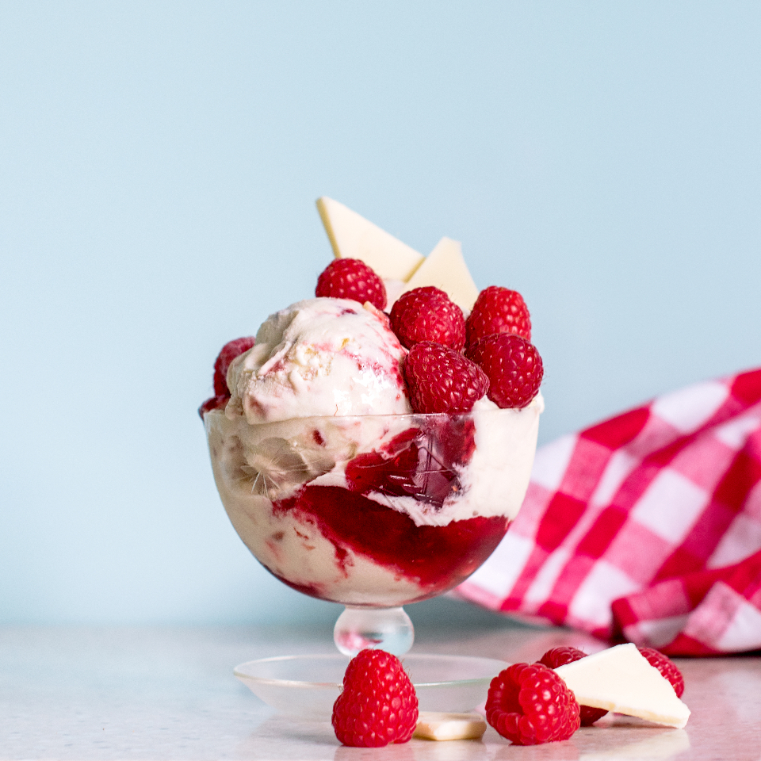

Main
Strawberry Jam Ripple

Info:
- Serves: 8 people
- Preparation time: 15 mins
- Difficulty: Easy
Ingredients
- 600ml double cream
- 395g can condensed milk
- 1/2 teaspoon vanilla extract
- 1/2 a lemon (zested and juiced)
- 200g soft-set strawberry jam
Preparation
- Beat the double cream using an electric whisk until it holds its shape. Keep beating
on a lower speed and gradually pour in the condensed milk and vanilla extract, then
slowly add the lemon zest and juice. Put the mixture in a shallow baking tin or container
that will fit in your freezer.
- Drop the jam all over the surface in little blobs using a teaspoon, then drag a skewer
through the blobs to spread it out a little. Some jam will disappear from the surface
but that’s okay.
- Cover the container and put it in the freezer for at least 3 hrs. This is a soft-set
ice cream, so you don’t need to take it out of the freezer too far ahead of serving.
Will keep in the freezer for up to three months.